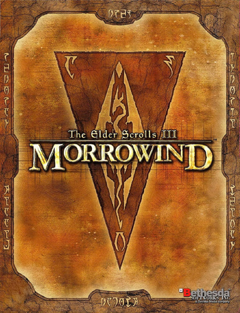

Introduction to the Game
 The Elder Scrolls III: Morrowind is the third chapter in The Elder Scrolls series of role-playing games (RPG) developed and published by Bethesda Softworks. It is set in and around the province of Morrowind, in particular the island of Vvardenfell. It has two expansion packs, Tribunal (2002) and Bloodmoon (2003). The game was released for PC on May 1, 2002, in North America and May 2, 2002, in Europe. The Xbox version was released on June 6, 2002, in North America and November 22 in Europe. It is available for the PC and Xbox. It is backward compatible on the Xbox 360 and Xbox One.
Plot
While Morrowind contains many quests and storylines, the central plot revolves around The Tribunal, a triumvirate of god-like beings ruling over Morrowind, and their struggle against a former ally, the deity Dagoth Ur and his Sixth House – a cult of followers stretching out from Red Mountain, the volcanic center of Vvardenfell, the island on which the game is set. Dagoth Ur has used the Heart of Lorkhan, an artifact of great power, to make himself immortal and now seeks to drive the Imperial Legion occupiers from Morrowind using his network of spies, as well as Akulakhan, an enormous mechanical golem powered by the Heart of Lorkhan. After a storm and a strange dream vision, the player character (PC) begins in a town called Seyda Neen, fresh off a boat from a mainland prison, freed by the string-pulling of the current ruler of the Tamrielic Empire, Emperor Uriel Septim VII. The PC is given the task of meeting Caius Cosades, a member of the Blades, a secret group of spies and agents working for the Emperor and the Empire. Cosades inducts the player into the Blades on the Emperor's orders and sets the player on various quests to uncover the mysterious disappearances and revelations that the citizens of Vvardenfell have experienced, particularly the Sixth House and the Ashlander prophecies of the Nerevarine. It is later revealed that the induction under Cosades, and the player's release from prison, was due to the Emperor's suspicion that the player might be the Nerevarine – a reincarnation of the legendary Dunmer hero Indoril Nerevar – or at least someone who would make a convincing imposter to use for political gain. The PC is tasked with uncovering the prophecies regarding the Nerevarine and to fulfill them to finally defeat Dagoth Ur and his Sixth House cult. Prophecies from the nomadic Dunmer people living in the Ashlands, the Ashlanders, predict that Nerevar's incarnate will fulfill a set of seven prophecies. The first two prophecies are that the Nerevarine will be born on a certain day to uncertain parents, and will be immune to Corprus disease, a Divine disease created by Dagoth Ur. The player has already fulfilled the first, and hence was chosen for the task. The player becomes immune to Corprus by contracting the disease and surviving an experimental cure. Fulfilling these, the player seeks to complete the third prophecy, a test to find the Moon-and-Star (also called One-Clan-Under-Moon-And-Star), the symbolic ring originally worn by Nerevar, which has the power to instantly kill anyone, apart from himself (and by extension, the Nerevarine), who tries to wear it. Upon finding and equipping the ring, the player receives a vision from Azura, the ancient Daedric Prince of the Dawn and Dusk, who confirms that the player is Nerevar's incarnate. The Nerevarine completes the fourth and fifth trials, which are to rally the Great Houses of the Dunmer and Ashlanders of Vvardenfell under one banner. After receiving the support and being declared "Hortator" by every Great House and "Nerevarine" by all nomadic Ashlander tribes, the player is officially, albeit reluctantly, called "Nerevarine" by the Tribunal Temple, who normally persecute anyone who claims to be the Nerevarine and sentences them to death. The Nerevarine is invited to the palace of the poet god-king Vivec, one of the three deities that form the basis of Morrowind's religion, known as the Tribunal, to discuss the assault on Dagoth Ur's stronghold in the heart of Red Mountain. Vivec presents the player with the gauntlet 'Wraithguard', an ancient Dwemer artifact that allows the use of the tools Sunder and Keening. These ancient weapons were created by the Dwemer to tap into the power of the fabled Heart of Lorkhan, which they found beneath Red Mountain - and these same tools have been used by the Tribunal and Dagoth Ur to reach their god-like status. The tools can, however, also destroy the fabled Heart of Lorkhan, but without having the Wraithguard equipped, they will deal a fatal blow to whoever wields them. The player travels into Red Mountain to Dagoth Ur's citadel. After talking with Dagoth Ur, who attempts to sway the player to his side with the claim that he is merely following Nerevar's final orders, the player and Dagoth Ur fight. Besting Dagoth Ur, the Nerevarine soon discovers that while the Heart of Lorkhan is still intact, Dagoth Ur remains immortal and he soon returns from death. Making his way to the very heart of the mountain, the Nerevarine finds the Heart of Lorkhan and destroys it, severing Dagoth Ur from his power and ultimately killing him. Akulakhan's Chamber, where Lorkhan's heart resided, is destroyed in the process as the cavern collapses, and in turn, Red Mountain is cleared of blight and The Sixth House falls. Upon escaping from the chamber, the Nerevarine is congratulated by Azura, who comes to reward the player's efforts of fulfilling the prophecy.
Introduction to the Main Quest
In the opening cinematic scene Azura explains to the dreaming Nerevarine that they have been taken from the Imperial City's prison to Morrowind. Azura gives only a reassurance, with no explanation as to why you have been chosen or even for what exactly you've been chosen. As this scene is playing out there are runes scrolling faintly in the background and as Azura finishes speaking one line becomes readable."Many fall, but one remains." The next voice heard is that of a concerned Dunmer prisoner named Jiub who wakes you from the dream and asks for your name. This is where the character creation begins and the game opens up. Once freed, the game world becomes an incredibly interactive environment filled with opportunities for fun and adventure. Even though the main quest centers on the player being the Nerevarine of prophecy, it is an open-play style role-playing game, meaning you can do what you want and be who you wish. Prowl the streets as a nimble thief picking pockets and fencing ill-gotten treasure, join the Mages Guild and rise to the rank of Arch-Mage, be an assassin stalking targets in the shadows, become a noble member of one of the Great Houses, and even explore "life" as a vampire or a werewolf.
Expansions (DLC)
- Tribunal
- Bloodmoon
The Elder Scrolls III: Tribunal is the first expansion for Bethesda Softwork's The Elder Scrolls III: Morrowind, and is included in the Game of the Year edition, along with Bloodmoon. It takes place in the temple/city of Mournhold, the capital of Morrowind, located in the larger city of Almalexia. The title refers to the three "Living Gods," known as the Tribunal.
Unlike the first expansion Tribunal, which added a city separate from the world map consisting of interior cells, Bloodmoon adds a large new island to the original world map, a cold northern territory named Solstheim. Rather than the Dunmer (dark elves) that are the indigenous race in nearby Morrowind, Solstheim is populated largely by the Nords. This is largely due to the fact that the island sits more or less astride the border between Morrowind and the Nord homeland of Skyrim. This expansion adds new enemies, the East Empire Company as a joinable faction, and the possibility to become a werewolf, akin to the inclusion of vampires seen in Morrowind. Bloodmoon also uses larger and more detailed environments, including snowfall, thus raising the computer hardware requirements, though the ash storms of the original game are much harder on computers than the snow of Bloodmoon.